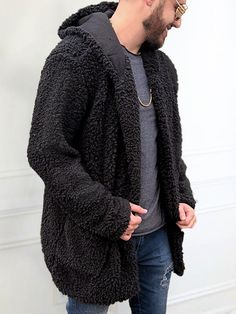

Estações da Moda
Looks de verão
No verão por conta do calor, devemos vestir peças de roupas que conta com panos mais finos e florais
usando sempre a criatividade na hora de montar os looks. Veja os looks escolhidos logo abaixo;
- Vestidos florais (Para as mulheres) e camisa de botão (Unissex)
- Sandalias (Unissex)
- Shorts (Homem e mulher)


É sempre bom investir em peças que que realça umas a outras.
Acessórios de Verão
Além das peças de roupas é sempre importante andar com Acessórios para destacar seu estilo.
Veja abaixo algumas opções de Acessórios;
- Oculos de sol (Bem estilosos)
- Pulseira de pedras
- Colar
É sempre importante você vestir o que você gosta e se sinta confortavel, A moda só oferece ideias
que podem ser seguidas."
Looks de Inverno
O inverno é uma epoca fria, então por isso separei algumas ideias do que usar durante esses periodos como cores e peças de roupas.
Veja logo abaixo;
- Casacos longos
- Roupas metalizadas
- Roupas de pelucias 
No inverno você deve apostar em cores como vermelho e laranja, usar roupas longas tambem e bom.
- Cachecol
- Faixa de cabelo